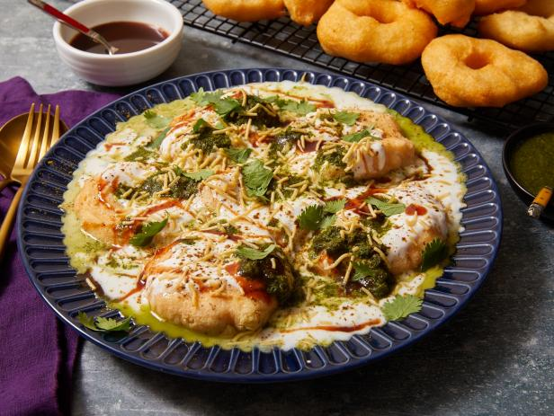
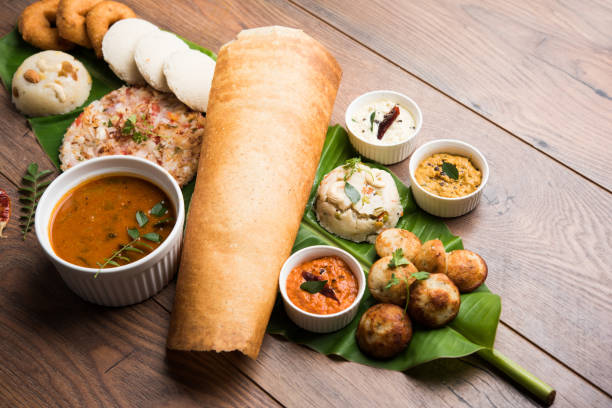
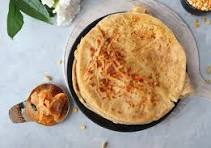

Tandoori chicken is a dish made from chicken marinated in yogurt and spices and roasted in a tandoor, a cylindrical clay oven. The dish is now popular worldwide. The modern form of the dish was popularized by the Moti Mahal restaurant in New Delhi, India in the late 1940s.
 Dal Baati is comprising Dal (lentils) and Baati (hard wheat rolls). It is popular in other part of Madhya Pradesh also. Dal is prepared using Tuvaar Dal, Chana Dal (prepared by removing skin of split chickpeas), Mung dal. The pulses or lentils are cooked together after being soaked in water for a few hours.
Dal Baati is comprising Dal (lentils) and Baati (hard wheat rolls). It is popular in other part of Madhya Pradesh also. Dal is prepared using Tuvaar Dal, Chana Dal (prepared by removing skin of split chickpeas), Mung dal. The pulses or lentils are cooked together after being soaked in water for a few hours. Dhal or Dal refers to lentils and Makhani translates to buttery. Dal Makhani literally means Buttery dal. Traditionally Dal Makhani is prepared by cooking lentils on wood/coal fire for several hours. This slow cooking for prolonged hours yield a creamy, thick and best tasting buttery dal.
Dhal or Dal refers to lentils and Makhani translates to buttery. Dal Makhani literally means Buttery dal. Traditionally Dal Makhani is prepared by cooking lentils on wood/coal fire for several hours. This slow cooking for prolonged hours yield a creamy, thick and best tasting buttery dal.Idli or idly (/ɪdliː/) (plural: idlis) is a type of savoury rice cake, originating from South India, popular as a breakfast food in Southern India and in Sri Lanka. The cakes are made by steaming a batter consisting of fermented black lentils (de-husked) and rice.
Puran Poli is a sweet flatbread where the Puran is stuffed inside the whole wheat dough and rolled to form a thin flatbread. It is then cooked on a hot griddle with a generous amount of ghee until both sides are cooked with golden brown spots.
 Tandoori chicken as a dish originated in the Punjab before the independence of partition of India .What is special about tandoori?
The flavour that tandoori cooking gives is unlike any other. Food cooked in a tandoor.The modern form of the dish
Tandoori chicken as a dish originated in the Punjab before the independence of partition of India .What is special about tandoori?
The flavour that tandoori cooking gives is unlike any other. Food cooked in a tandoor.The modern form of the dish